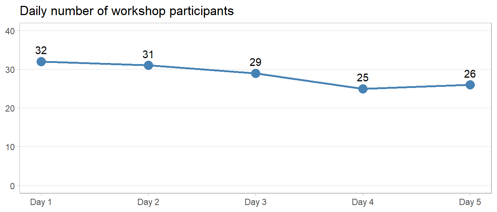
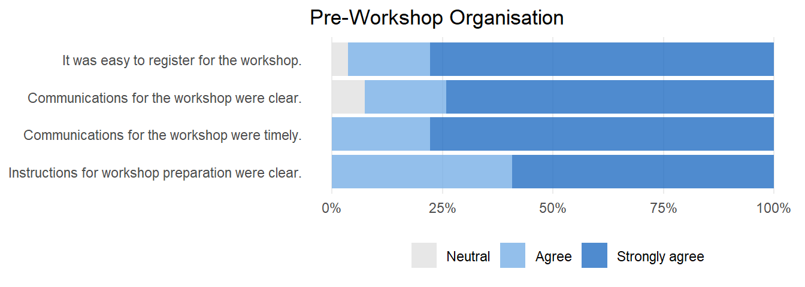
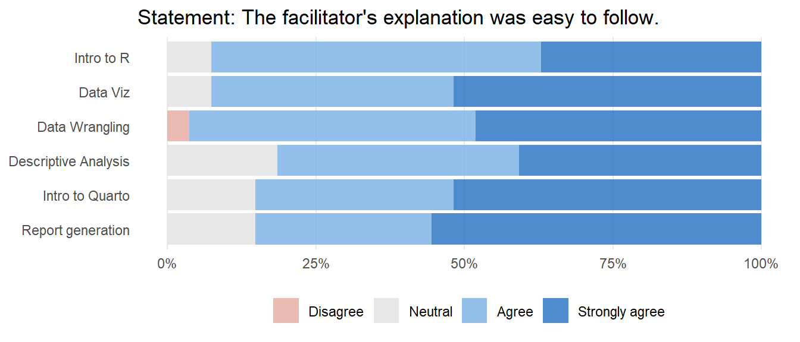
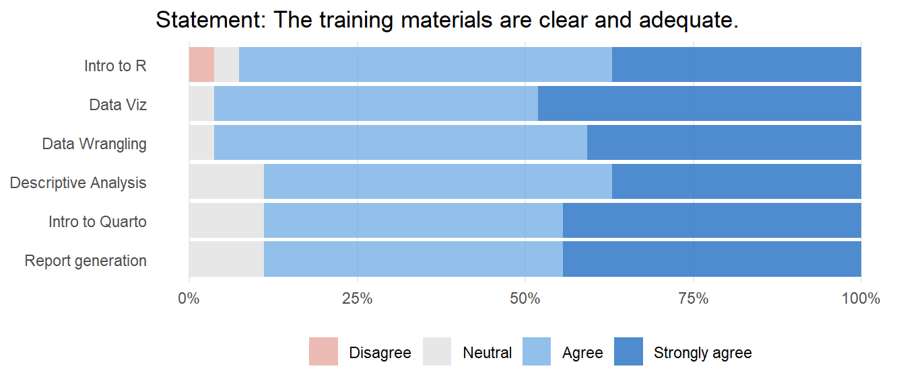

![]()
| Characteristic | N = 351 |
|---|---|
| Gender | |
| Female | 15 (43%) |
| Male | 20 (57%) |
| Country of Residence | |
| Bangladesh | 7 (20%) |
| Nigeria | 1 (2.9%) |
| Pakistan | 22 (63%) |
| Philippines | 2 (5.7%) |
| South Africa | 3 (8.6%) |
| Type of Participant | |
| PIECEs | 10 (29%) |
| Fellowship | 9 (26%) |
| Other | 16 (46%) |
| Participant Organization | |
| IRD staff | 27 (77%) |
| External participant | 8 (23%) |
| 1 n (%) | |
Workshop Report
Introduction to Data Analysis with R (22 to 26 January 2024)
This workshop was supported by the Small Scale Research Grant (SSRG), an initiative of the PIECEs project (funded by National Institute for Health and Care Research (NIHR)) under the mental health program of Interactive Research & Development (IRD) - Pakistan. The initiative aims to enhance research and grant management skills of early-career researchers in Pakistan. Five projects out of 111 applications were selected. This workshop is part of the capacity building effort for SSRG awardees.
In addition to SSRG members, IRD staff members across four IRD country affiliates – Pakistan, Bangladesh, South Africa, and Philippines – were also invited to participate in the workshop.
Curriculum
- Workshop date: 22 to 26 January 2024
- Total workshop duration: 12.5 hours (2.5 hours each day)
- Online platform used: Zoom
- Facilitators:
- Zaw Myo Tun (Senior Manager, Global Research Office)
- Cheng Yew Toon (Deputy Manager, Grant Management Office)
This is a five-day online workshop aiming to familiarise the participants with R language and Quarto, an open-source scientific and technical publishing system for creating dynamic documents assembling the narrative, code and its output in one document. The table below shows the topics covered in the workshop and the amount of time spent for each topic. In addition to R syntax, we also covered popular R packages for performing basic data wrangling (primarily {dplyr}) and visualisation ({ggplot2}). In addition, we used an example of a simple monthly report of a public health project to show case the basic capabilities of Quarto.
| Topic | Duration in hours | Presenter |
|---|---|---|
| Intro to R syntax | 2.5 | Cheng Yew Toon |
| Data visualisation (Including setting up project and reading data into R) | 2.5 | Zaw Myo Tun |
| Data management | 2.5 | Cheng Yew Toon |
| Dates and descriptive analysis | 1.5 | Zaw Myo Tun |
| Introduction to Quarto | 1 | Cheng Yew Toon |
| Programmatic report generation | 2.5 | Zaw Myo Tun |
Workshop Participation
Workshop registration was open in October 2023. Of 48 people registered, 35 attended at least one (out of five) day. The table below describes their characteristics. Out 35 who registered, 31 (86%) attended at least three days of the workshop.
The figure below shows daily attendance of R session participants. Compared to 32 participants on the first day, the majority (81%) remained in the workshop on the last two days. This suggests a strong level of interest in R among the participants and in a way the usefulness and quality of the training.

Feedback from the participants
On the last day of workshop, we distributed an electronic form to participants to collect their feedback on the organisation of the workshop and its contents. For the organisation before the workshop and each topic covered in the curriculum, we asked the participants to rate the extent to which they agree with a particular statement in a scale of five namely strongly disagree, disagree, neutral, agree, and strongly agree. The statements are primarily on the timeliness and clarity of the communications and workshop contents. In addition, participants were also asked to provide qualitative feedback with regards to what we did well and suggestions for improvement on each topic in comment boxes.
To encourage participants to provide feedback on the workshop, we only provided the certificates of participation to those who completed the form. Among 35 people who attended at least one day, 27 (77%) completed the feedback form. The table below shows their characteristics.
| Characteristic | N = 271 |
|---|---|
| Gender | |
| Female | 12 (44%) |
| Male | 15 (56%) |
| Country of Residence | |
| Bangladesh | 6 (22%) |
| Nigeria | 1 (3.7%) |
| Pakistan | 15 (56%) |
| Philippines | 2 (7.4%) |
| South Africa | 3 (11%) |
| Type of Participant | |
| PIECEs | 8 (30%) |
| Fellowship | 8 (30%) |
| Other | 11 (41%) |
| Participant Organization | |
| IRD staff | 22 (81%) |
| External participant | 5 (19%) |
| SSRG | 5 (19%) |
| 1 n (%) | |
Overall, the feedback from participants was largely positive. In the rest of the report, we provide more details on quantitative rating and a summary of qualitative feedback.
Pre-Workshop Organisation
Participants were asked to rate different aspects of the organisation before the workshop, including registration procedure and clarity of instructions to prepare for the workshop. The vast majority of participants agreed that workshop registration was easy, communications were timely and clear, and instructions for preparation were clear. The qualitative feedback echoed these results: most participants found the communications of the workshop were timely and clear.

Workshop Activities and Materials
In addition to pre-work organisation, we also gathered feedback on the clarity of facilitators’ explanation and the training materials shared with the participants.
Facilitators’ Effectiveness
Most participants reported that facilitators’ explanation was easy to follow in all topics. In the figure below, at least 80% of all participants reported either ‘agree’ or ‘strongly agree’ with the statement ‘The facilitator’s explanation was easy to follow’ across all topics. However, this percentage is slightly lower for topics in the second half of the workshop: descriptive analysis and Quarto-related topics. This is perhaps unsurprising because more participants may find it difficult to follow those sessions as we introduce more complex concepts and tools.

Clarity of Training Materials
Participants also responded very positively to the statement ‘the training materials are clear and adequate’. The vast majority of participants (at least 89%) reported either ‘agree’ or ‘strongly agree’ to the statement.

Qualitative comments
On each topic, we asked the participants what we have done well and suggestions for improvement on each topic in addition to the quantitative rating. The responses tend to be general even though participants wrote them under specific topics. Therefore, we summarise them altogether without differentiating the topics.
In terms of what we have done well, most participants reported that the sessions were well-organised, hands-on, and easy to follow. The materials were informative. During the sessions, participants were asked to share their screen with everyone if they encountered any troubles. This was intentional as the same problems would most likely be encountered by other participants. One participant highlighted this stating how she appreciated this style of teaching. Perhaps, sharing one’s screen may also have provided psychological reassurance to everyone else that they are not the only one having these problems and it is OK to speak out and ask for help.
Many participants also provided suggestions for improvement. Most suggestions revolve around providing more time for practice. Some participants would like more hands-on exercises and in-depth materials. One participant said that the session on time series plot and descriptive analysis was too hasty and difficulty to follow. We take note of these suggestions and will improve these areas in the next workshop iteration.
Conclusion
During this workshop, we introduced participants to the R language for data analysis and Quarto for scientific and technical publishing. Overall, the feedback from attendees was predominantly positive. Many suggested allocating more time for hands-on practice during sessions, indicating a strong demand for introductory R workshops among researchers and health professionals. Learning R incurs no cost, as both R and RStudio IDE are open-source and freely accessible. Collaborative learning within a community setting is deemed most effective for mastering R for data analysis, fostering both enhanced efficiency in data work and a sense of community development.
Acknowledgement
We would like to thank Nabeel Nisar, Abdul Rabb and Maryam Younus for providing the technical set up and assisting the on-site SSRG participants in Pakistan.
Table of Acronyms
| IDE | integrated development environment |
| IRD | Interactive Research & Development |
| NIHR | National Institute for Health and Care Research |
| SSRG | Small Scale Research Grant |